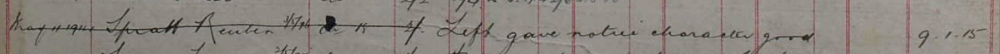
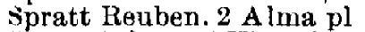
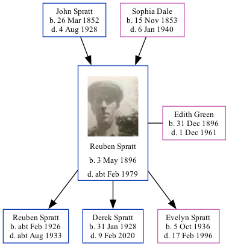

Reuben Spratt 1896 - c1979
[ Home ] | [ Calendar ] | [ Surnames Index ] | [ Family History ]The son of John Spratt and Sophia Dale, Reuben Spratt, the great-uncle of <a href="I1.html">Nigel Horne</a>, was born in St Nicholas-at-Wade, Kent, England on May 3, 1896<span class="citation">1,2,3,4,5,6</span> and married Edith Green (with whom he had 3 children: <a href="I432.html">Reuben A</a>, <a href="I431.html">Derek John</a> and <a href="I433.html">Evelyn Maud</a>) in Thanet, Kent, England around Nov 1924<span class="citation">7</span>. Like his father, he was an agricultural laborer. </p><p>Reuben spent all of his life in Kent, England. Throughout his life, he lived in several places around the county: on 2 Nash Court Cottage, Nash Road, Margate on Mar 31, 1901<span class="citation">1</span> and on Apr 2, 1911<span class="citation">10</span>; at Nash in Thanet on Jun 19, 1921<span class="citation">3</span>; at 2 Alma Place, Margate in 1935<span class="citation">9</span> and on Sep 29, 1939<span class="citation">11</span>; and on 4 Alma Road, Margate in 1961<span class="citation">8</span>. He served in the army (<em>private 201124 East Kent Regiment</em>). Reuben In 1921 he was working at Joseph Gunson Farmer.<p>He died <i>c.</i> Feb 1979 in Thanet<span class="citation">4,5</span>.
Parents
- John was born on Mar 26, 1852
- Sophia was born on Nov 15, 1853
Children
- Reuben A was born c. Feb 1926
- Derek John was born on Jan 31, 1928
- Evelyn Maud was born on Oct 5, 1936
Citations
- 1901 England Census Online publication - Provo, UT, USA: The Generations Network, Inc., 2005.Original data - Census Returns of England and Wales, 1901. Kew, Surrey, England: The National Archives of the UK (TNA): Public Record Office (PRO), 1901. Data imaged from the National
- 1911 England Census Online publication - Provo, UT, USA: Ancestry.com Operations, Inc., 2011.Original data - Census Returns of England and Wales, 1911. Kew, Surrey, England: The National Archives of the UK (TNA), 1911. Data imaged from the National Archives, London, England.
- 1921 Census Of England & Wales - Findmypast (was age 25 and the son of the head of the household)
- England & Wales deaths 1837-2007 - Findmypast
- England & Wales, Death Index: 1984-2005 Online publication - Provo, UT, USA: The Generations Network, Inc., 2007.Original data - General Register Office. England and Wales Civil Registration Indexes. London, England: General Register Office. © Crown copyright. Published by permission of the Cont
- England & Wales, FreeBMD Birth Index, 1837-1915 Online publication - Provo, UT, USA: The Generations Network, Inc., 2006.Original data - General Register Office. England and Wales Civil Registration Indexes. London, England: General Register Office. © Crown copyright. Published by permission of the Cont
- England & Wales, Marriage Index: 1916-2005 Online publication - Provo, UT, USA: The Generations Network, Inc., 2009.Original data - General Register Office. England and Wales Civil Registration Indexes. London, England: General Register Office. © Crown copyright. Published by permission of the Cont
- From his wife's probate record
- 1935 Kelly's Thanet Directory
- 1911 Census for England & Wales - Findmypast (was age 15 and the son of the head of the household)
- 1939 Register - Findmypast (was the head of the household)
Media
Reuben Spratt

UK Railway Employment Record

1935 Kelly's Thanet Directory

England & Wales births 1837-2006 - BMD/B/1896/2/AZ/000551/349
1939 Register Transcription - TNA-R39-1755-1755D-006-38
England & Wales deaths 1837-2007 Transcription - BMD-D-1979-1-AZ-001213-054
1911 England, Wales & Scotland Census Transcription - GBC-1911-RG14-04484-0189-5
Medal Index Cards Transcription - GBM-MCI-4217148
England & Wales marriages 1837-2008 Transcription - BMD-M-1924-4-AZ-001097-105
1921 Census of England & Wales - GBC/1921/RG15/04434/0087/04
Family Tree
Generated by Ged2Site. Last updated on Jul 20, 2025